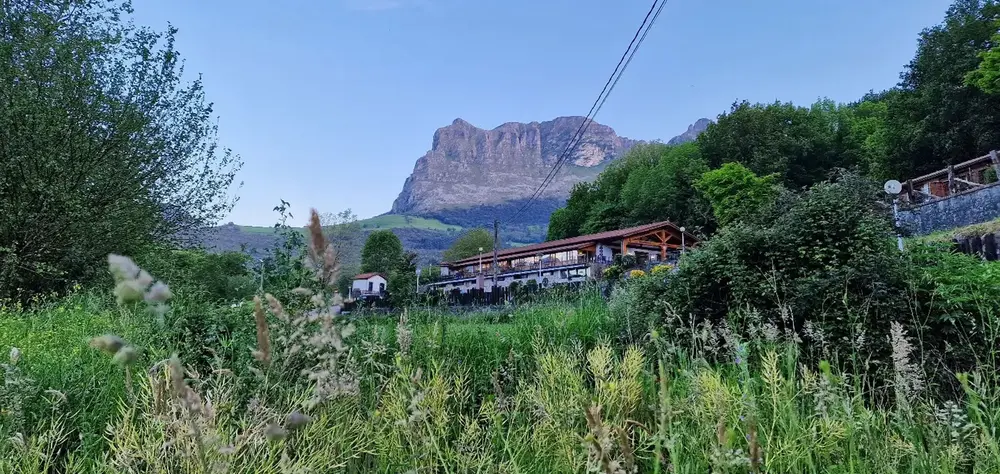
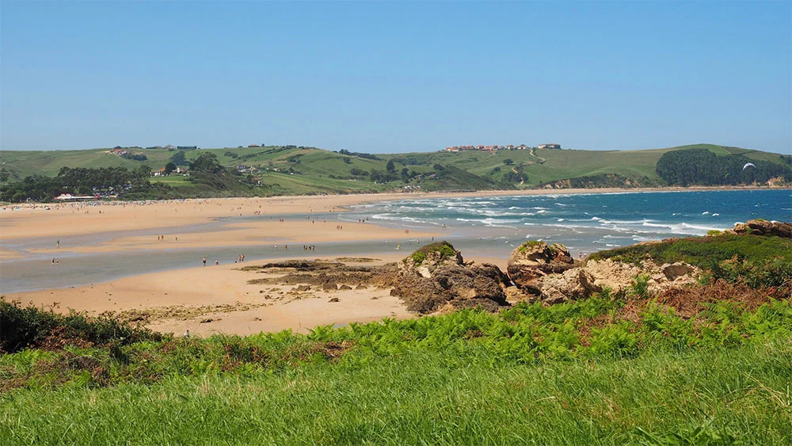
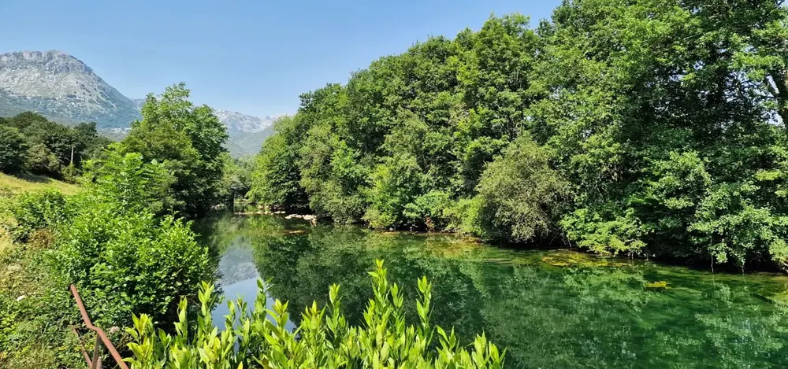
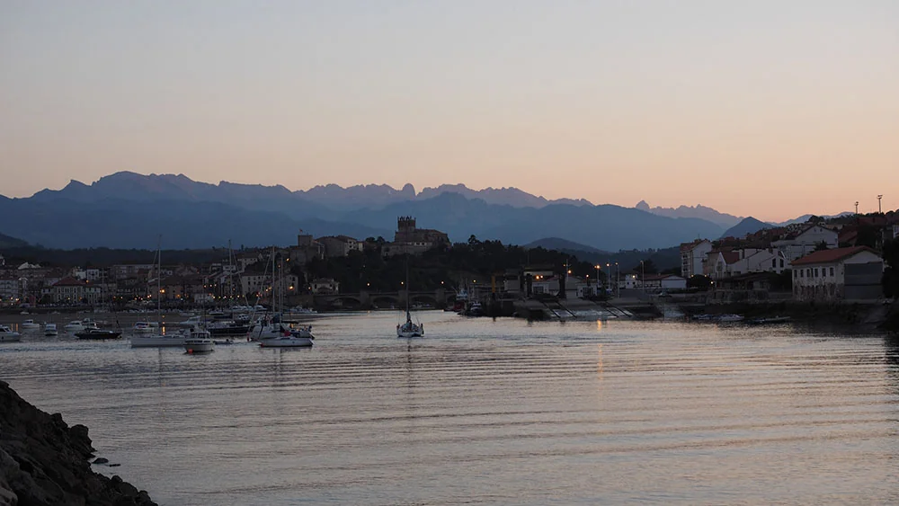
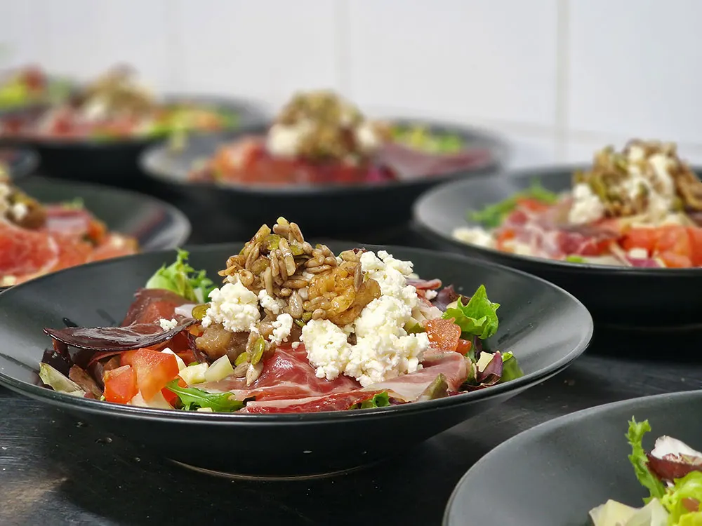
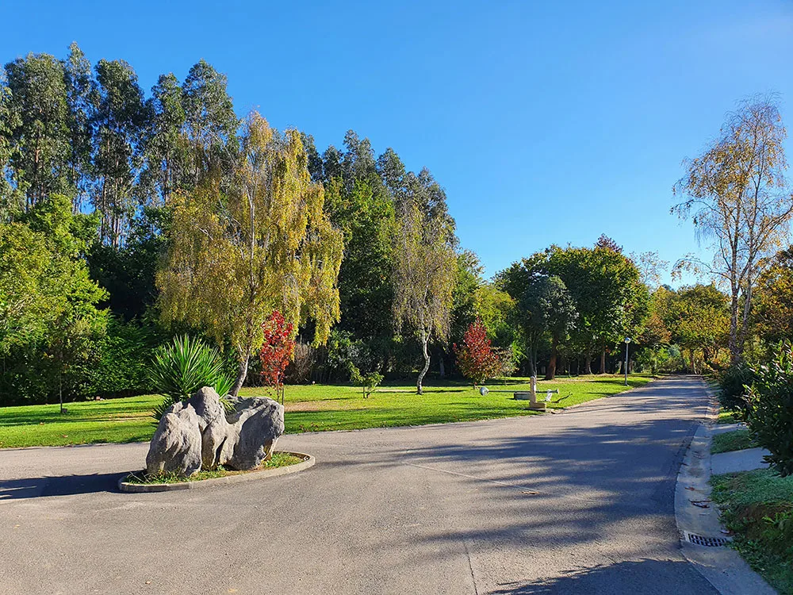
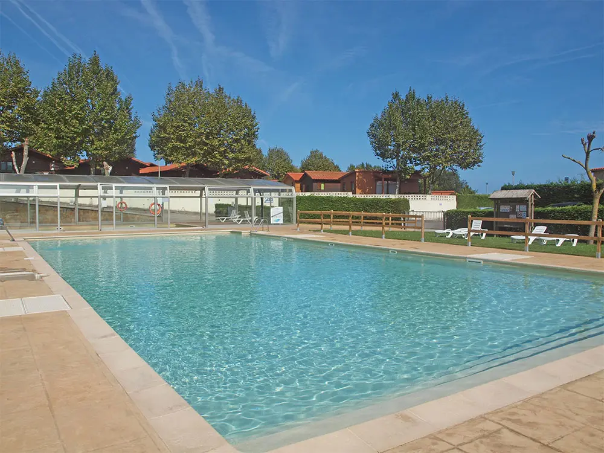
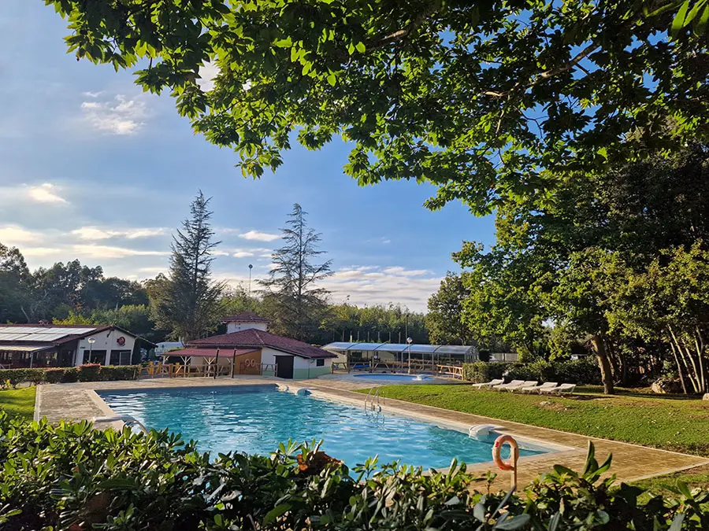
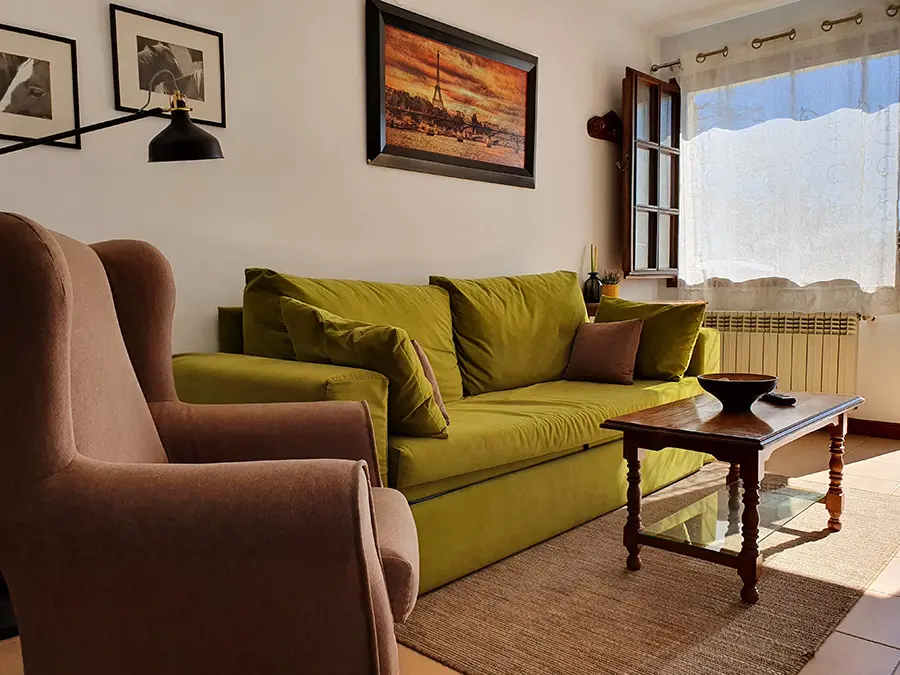
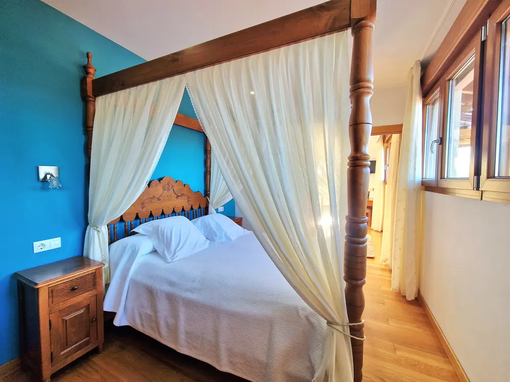

Estás a cobijo.
Ver mi estancia CANTABRIA · GRUPO A COBIJO
¿Dónde te alojas? Oyambre Ramales El Helguero · Ruiloba El Cardeo Hotel Verdemar
Mi estancia Contactos, clima, horarios Horarios Organiza tu día Necesito ayuda Contacta con recepción Eventos La agenda del grupo
Servicios útiles ↗
Llévate A Cobijo contigo Instala la app gratis y ten tu estancia a mano desde la pantalla de inicio.
Instalar la app ↓
A tu ritmo
Sal a descubrir Cantabria 
Mar y playas ↗ 
Rutas a pie y en bici ↗ 
Imprescindibles ↗ 
Gastronomía ↗ Mercadillos ↗ 
Favoritos del equipo ↗

OYAMBRE Caravaning Oyambre ↗ VALLE DEL ASÓN Camping Ramales ↗ 
RUILOBA Camping Ruiloba ↗ 
OYAMBRE Apartamentos El Cardeo ↗ 
OYAMBRE Hotel Verdemar by Grupo A Cobijo ↗ Premios y reconocimientos ↗ Sugerencias ↗
Mi estancia
Guardamos tu elección en este dispositivo.
Selecciona tu alojamiento
Oyambre
Ramales
Ruiloba
El Cardeo Hotel Verdemar
Mar y playas
Servicios útiles
Horarios del alojamiento
Explorar rutas de mi zona
☀️
-- °
Máx : -- ° · Mín : -- °
—
BY GRUPO A COBIJO
Hotel Verdemar Una escapada entre el mar y la naturaleza, en el Parque Natural de Oyambre, cerca de San Vicente de la Barquera y Comillas.
Barrio La Cotera nº 15 · 39593 Valdáliga, Cantabria
Habitaciones y equipamiento Elige entre los seis tipos de habitación del hotel:
La Suite: cama de matrimonio, salón con sofá cama, baño con jacuzzi y terraza privada con vistas a los Picos de Europa y al Parque Natural de Oyambre. Doble con jacuzzi: cama de matrimonio, jacuzzi en la habitación y baño privado. Situada en la planta baja, sin vistas. Triple con altillo: distribución en dos alturas, camas individuales, baño privado y terraza con vistas al Parque Natural de Oyambre. Doble con jardín: cama de matrimonio, baño privado y acceso directo al jardín, a pie de calle. Doble: cama de matrimonio, baño privado y vistas al Parque Natural de Oyambre. Habitación adaptada: dos camas individuales, planta baja y baño adaptado para personas con movilidad reducida. Equipamiento común: sábanas, toallas, calefacción, ventilador, televisión y secador de pelo.
La doble con jardín, la doble y la adaptada admiten mascotas, según las condiciones del hotel.
Consultar habitaciones Servicios e instalaciones Desayuno buffet, wifi, aparcamiento, jardín, ascensor y recepción. Piscinas exterior e interior, jacuzzi interior y baño turco.
Consulta con recepción la disponibilidad y las condiciones de uso.
Consultar servicios Entorno Condiciones de reserva Condiciones para mascotas
Incidencias
Se abre WhatsApp o tu app de correo con el mensaje preparado.
¿En qué alojamiento estás?
Oyambre
Ramales
Ruiloba
El Cardeo Hotel Verdemar
Tipo de incidencia
Describe brevemente el problema
Eventos
Todos
Hoy
Mañana
Esta semana
Favoritos
Todos los campings
Oyambre
Ramales
Ruiloba
El Cardeo Hotel Verdemar
Sin eventos por ahora.
Nuestros campings
Camping Caravaning Playa de Oyambre
Todos los servicios · Frente al mar
Ver restaurante
Camping Ramales
Cuevas · Montaña · Actividades
Ver restaurante
Camping El Helguero (Ruiloba)
Naturaleza · Familiar · Mascotas
Apartamentos / Taberna El Cardeo
Apartamentos + Taberna
BY GRUPO A COBIJO
Hotel Verdemar Una escapada entre el mar y la naturaleza, en el Parque Natural de Oyambre, cerca de San Vicente de la Barquera y Comillas.
Barrio La Cotera nº 15 · 39593 Valdáliga, Cantabria
Habitaciones y equipamiento Elige entre los seis tipos de habitación del hotel:
La Suite: cama de matrimonio, salón con sofá cama, baño con jacuzzi y terraza privada con vistas a los Picos de Europa y al Parque Natural de Oyambre. Doble con jacuzzi: cama de matrimonio, jacuzzi en la habitación y baño privado. Situada en la planta baja, sin vistas. Triple con altillo: distribución en dos alturas, camas individuales, baño privado y terraza con vistas al Parque Natural de Oyambre. Doble con jardín: cama de matrimonio, baño privado y acceso directo al jardín, a pie de calle. Doble: cama de matrimonio, baño privado y vistas al Parque Natural de Oyambre. Habitación adaptada: dos camas individuales, planta baja y baño adaptado para personas con movilidad reducida. Equipamiento común: sábanas, toallas, calefacción, ventilador, televisión y secador de pelo.
La doble con jardín, la doble y la adaptada admiten mascotas, según las condiciones del hotel.
Consultar habitaciones Servicios e instalaciones Desayuno buffet, wifi, aparcamiento, jardín, ascensor y recepción. Piscinas exterior e interior, jacuzzi interior y baño turco.
Consulta con recepción la disponibilidad y las condiciones de uso.
Consultar servicios Entorno Condiciones de reserva Condiciones para mascotas
Ver mi estancia
Horarios
Info orientativa. Pregunta en recepción para cambios de temporada. Los horarios pueden variar según la fecha.
Imprescindibles de Cantabria
📍 Calcular distancias
Abre cada apartado para ver descripción, qué ver, mapa, imágenes, entradas y distancia desde tu ubicación.
Gastronomía cántabra
Productos típicos y platos que deberías probar.
Premios y reconocimientos
Hospitalidad que deja huella La naturaleza nos inspira. Vuestro reconocimiento nos anima a seguir cuidando cada detalle.
Establecimiento Todos Caravaning Oyambre Camping Ramales Camping Ruiloba
Cada distinción muestra el año en que se concedió.
No hay rutas para estos filtros.
Limpiar filtros
Los favoritos de nuestro equipo
📍 Calcular distancias
Selección personal de nuestro equipo: pueblos, actividades, playas, restaurantes y miradores.
🏘️ Pueblos
🎒 Actividades
🏖️ Playas
🍽️ Restaurantes
🔭 Miradores
Tu playa favorita se guarda solo en este dispositivo.
Horas de Cantabria · Europe/Madrid
Próxima marea —
Máximo previsto de olas —
Puesta de sol aproximada —
Altura significativa máxima prevista para el período indicado, en aguas abiertas. En la orilla puede variar.
Cálculo astronómico aproximado; el relieve y las nubes pueden ocultar el sol antes.
Fuente: Puertos del Estado
Mareas y oleaje previstos
Pleamares y bajamares Previsión de nivel del mar de Puertos del Estado, con efectos meteorológicos. Horas locales.
Previsión de olas por período Cada período corresponde a un día UTC. Mostramos su inicio y fin en hora de Cantabria.
Gráficos oficiales Consulta los gráficos ampliados en Puertos del Estado. Requieren conexión.
Abrir gráficos oficiales ↗ Los gráficos oficiales muestran horas GMT/UTC: en Cantabria se suma 1 hora en invierno y 2 en verano.
Visor oficial disponible en español e inglés.
Consulta las banderas y sigue las indicaciones de los socorristas.
No hay mercadillos con estos filtros. Prueba otro día o localidad.
Restablecer filtros Los días indicados corresponden a la programación habitual. Consulta la información oficial antes de ir.
Buzón de sugerencias
Cuéntanos qué mejorarías para tu próxima estancia. El mensaje se envía al alojamiento que elijas.
¿En qué alojamiento has estado?
Oyambre
Ramales
Ruiloba
El Cardeo Hotel Verdemar
Tipo de comentario
Valoración global (1–5)
Tu mensaje
No se guarda nada en servidores de la app: tu mensaje se envía por WhatsApp o email directamente al alojamiento.